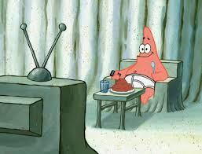
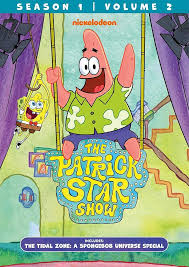
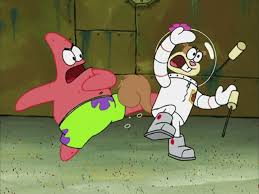

Patrick Star Fanpage!
"Is Mayonnaise an Instrument?" - Patrick Star

Who is Patrick?
Patrick Star is a cartoon character from the animated television series SpongeBob SquarePants. He is a pink
starfish who lives under a rock in the underwater city of
Bikini Bottom. Patrick is best friends with SpongeBob and
is known for his goofy personality and lack of intelligence.
Despite often getting things wrong, he has a good heart and
is loyal to his friends. His silly behavior and childlike
humor make him one of the show's most beloved characters.
Acheievements
-
Winning a trophy for "Doing Absolutely Nothing Longer
Than Anyone Else"
Patrick Star won the trophy for "Doing Absolutely Nothing Longer
Than Anyone Else" because he literally would he sit around and do
absolutely nothing for an impressively long time. In the episode Big
Pink Loser, this award is given to Patrick as a joke, highlighting
Patrick’s extreme laziness and lack of motivation. He proudly accepts
the trophy without realizing it's not exactly something to be proud
of

-
Co-hosting his own show (Patrick star show)

The Patrick Star Show is a silly and fun cartoon where Patrick has his
own TV show that he hosts from his house. He goes on crazy adventures
with his family and makes up weird and funny stuff as he goes along.
The show is kind of random, but it’s entertaining because you never know
what Patrick will do next.Each episode feels like a mix of a talk show,
a dream, and a cartoon all in one. Even though it’s weird, that’s what
makes it fun and different from other shows.
-
Defeating villains with SpongeBob

Patrick used to fight villains along with SpongeBob in several
episodes and movies, usually by accident or with silly methods.
Even though he's not very smart, he always tries his best to help his
best friend. In The SpongeBob SquarePants Movie, Patrick wears fishnet
stockings and helps SpongeBob defeat the evil Cyclops and stop Plankton’s
plan. He also helps battle other villains like Man Ray and the Dirty
Bubble, usually with more luck than skill. Patrick might not be the
strongest or smartest hero, but his loyalty and bravery make him a
great sidekick.
More information on Patrick!